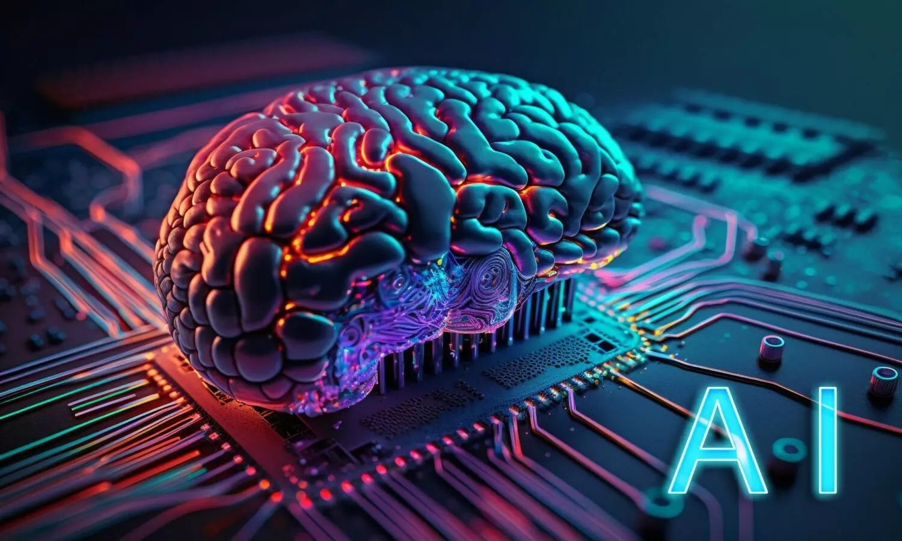
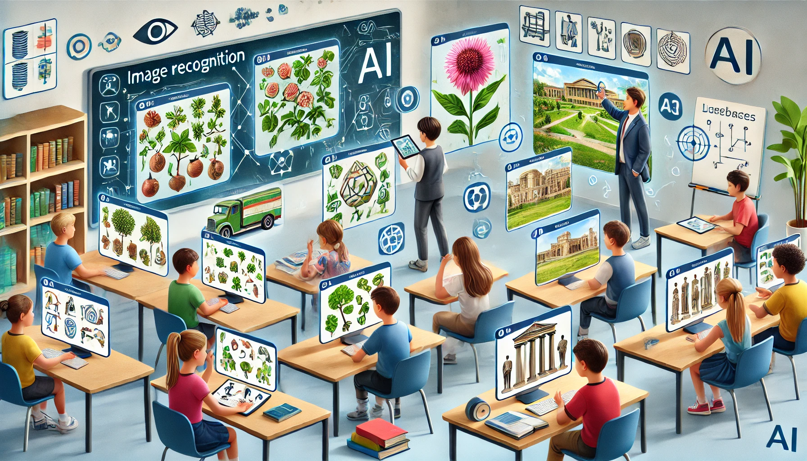
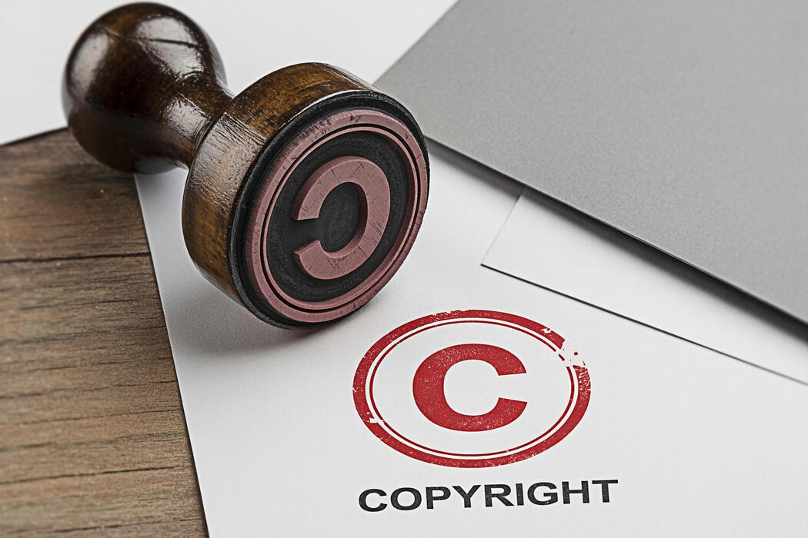
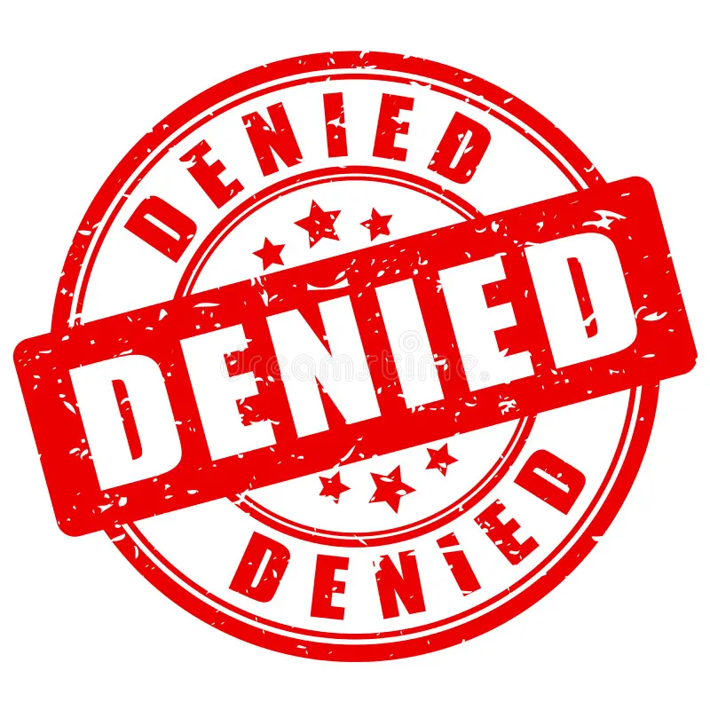

My Tech Issue Guide
Gallery
General AI Copyright Info

AI Should be able to Copyright

AI Should not be able to Copyright
Why This Issue Matters
If you use artificial intelligence to create an image, design, or illustration, do you own it? AI-generated content has become way more common across professional industries. If you're an artist, designer, content creator, or business owner, or even a student, these changes in AI copyright law could affect how you protect your work.
Human-Created Art
Created through an artist's individual creative decisions and techniques.
Created using artificial intelligence based on a text prompt or other input.
AI-Generated Art
Should these two works receive the same copyright protection?
The issue of AI and copyright is important because it affects the rights of creators and the development of technology. There needs to be a balance between protecting original work and allowing AI to advance. Copyright Alone Cannot Protect the Future of Creative WorkGeneral AI Copyright Information

Your writing goes here, in markdown.
For a more general understanding of how copyright law applies to artificial intelligence, the Congress.gov offers a useful legal guide surrounding AI-generated works This text helps explain the problems AI creates for existing copyright laws and that these issues are still being discussed.
For a deeper look at how artificial intelligence affects copyright laws, this free book shows how copyright protections apply to AI training data. It also discusses how governments are adapting laws to address AI.
AI SHOULD NOT be able to Copyrighted

Your writing goes here, in markdown.
For more information on why AI-generated works should not receive copyright protection, the USC college website writes about AI and intellectual property rights and explains why traditional copyright protections may not be enough to address the challenges created by AI.
For a real-world example of an AI company facing consequences for using copyrighted material without permission, this article covers Anthropic's $1.5 billion settlement over illegally downloading copyrighted books to train its AI chatbot. This case highlights the importance of protecting authors' work.
AI SHOULD BE able to Copyrighted
Your writing goes here, in markdown.
For more information on why AI-generated artwork should receive copyright protection, this article argues the case for extending copyright protections to AI-assisted visual art. It discusses how copyright protection could help encourage artistic innovation while mentioning some drawbacks.
For more information on why copyright law may not be the best solution to AI-related issues, this interview with a Harvard law professor explains how fair use could allow AI innovation while protecting existing creative works. It suggests that updating how AI companies compensate creators may be a better solution.